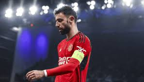
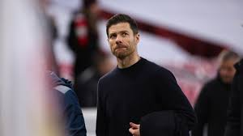

Welcome to SP News !
The renowned blog website that gives only the latest football news from around the globe!
Top Headlines
Bruno Fernandes sends important message to Ten Hag after exit from Manchester United
Follow SP News on the following:


Other News

Xabi Alonso will leave Bayer Leverkusen this summer: